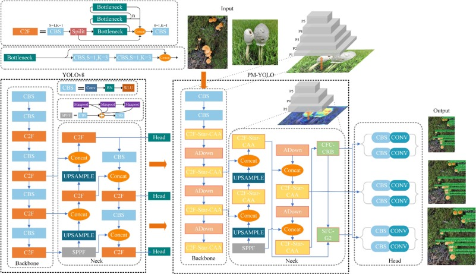
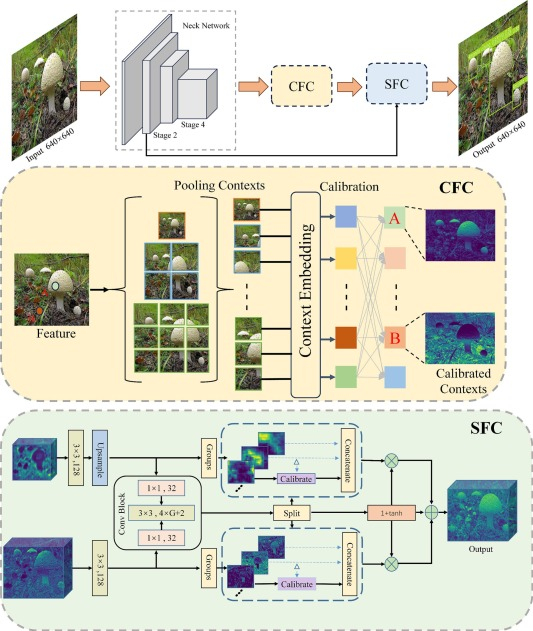
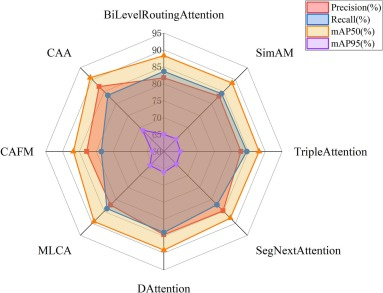
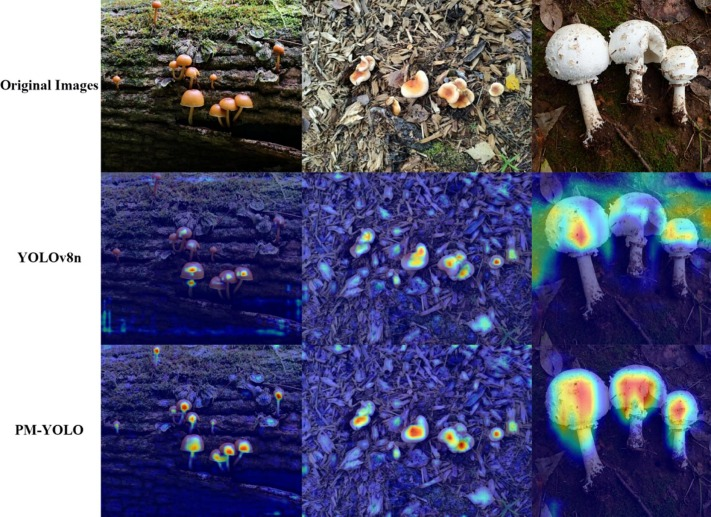

主页
我是做人工智能应用落地的科研工程师。核心在两块：轻量化视觉感知——把检测模型压到边缘设备真能跑的体量，精度还不能掉；以及大模型应用——把 LLM、RAG 和 Agent 接进真实业务流程。
近三年发表 SCI 论文 8 篇，其中第一作者 1 篇（Ecological Informatics，IF 7.3）。2026 年硕士毕业，目前在申请博士。
教育经历
-
吉林农业大学（中国）农业工程与信息技术 硕士 · 信息技术学院2023.09 – 2026.07
-
三重大学（日本）交换硕士 · 工学研究科 计算机工学2025.04 – 2025.08
-
南开大学（中国）计算机科学与技术 学士 · 现代远程教育学院2021.03 – 2023.07
工作经历
-
中国人民财产保险 · 长治市分公司信息技术支持 — 业务数据分析与自动化报表，以及 LLM / Agent 在出单核保、智能问答中的应用2026.07 – 至今
-
广州鸿鹄科技AI 应用开发实习 — Spring Boot 后端，以及基于 LangChain 的 RAG / Tool Calling 智能问答2024.04 – 2024.08
-
吉林省科技厅科技发展项目研究成员 — 复杂场景智能检测：识别算法、轻量化设计与自动化分级2023.09 – 2025.04
代表论文




一作 · SCI Q1 Top
A Lightweight Context-Aware Framework for Toxic Mushroom Detection in Complex Ecological Environments
误食毒蘑菇是林区主要的食品安全风险之一，但野外场景很难做：同属物种形态相似、边缘设备算力有限、天气与地形变化又会拖垮模型。我们提出 PM-YOLO——用上下文与空间特征校准网络（CSFCN）和上下文锚点注意力（CAA）做多尺度特征对齐与自适应加权，再配合知识蒸馏压缩模型。在自建的 12,039 张毒菌数据集上，mAP@0.5 达 92.64%，比 YOLOv8s 高 2.06 个百分点，参数量只有它的 31.25%（3.5M vs 11.2M），十折交叉验证的性能波动小于 2%。
前往期刊官方页面阅读全文论文
-
Horticulturae, 2026, 12(1): 76
-
Alexandria Engineering Journal, 2025, 128: 992–1014
-
Horticulturae, 2025, 11(7): 744
-
Ecological Informatics, 2025, 90: 103256
-
Horticulturae, 2025, 11(6): 600
-
Agronomy, 2025, 15(5): 1088
-
Agriculture, 2024, 14(8): 1353
-
Horticulturae, 2024, 10(7): 742
在审
-
A Knowledge-Distilled Lightweight Detection Framework for Edible Mushroom Recognition in Complex EnvironmentsEngineering Applications of Artificial Intelligence — 同行评审中
专利
-
一种轻量化改进算法的多种食用菌复杂环境下检测方法国家发明专利，已公开
研究方向
我的核心问题只有一个：算力被限制、场景又足够脏的时候，检测模型还能不能守住精度。围绕这个问题，几个具体的抓手是：
关键词
轻量化目标检测
复杂环境鲁棒性
小目标与密集目标
知识蒸馏
模型剪枝与压缩
注意力与上下文建模
边缘端部署
LLM Agent 与 RAG
技能
- 编程
- Python · Java · SQL
- 深度学习
- PyTorch · 检测 / 分割 / GAN · 知识蒸馏与模型压缩
- 大模型
- LangChain · RAG · Tool Calling · Agent
- 工程
- Spring Boot · MyBatis-Plus · Redis · RabbitMQ · Linux · Git
- 工具
- OpenCV · LaTeX · Origin · Visio
- 英语
- CET-6 556 · CET-4 593
荣誉与奖项
- 2024–2026吉林农业大学 研究生一等奖学金
- 2024, 2025吉林农业大学 优秀研究生 · 科研标兵
- 2024全国大学生信息安全竞赛 东北赛区三等奖
- 2024全国高校网络技术挑战赛 东北赛区三等奖
- 2024爱思唯尔（Elsevier）校园大使
- 2021南开大学 院级优秀学生
联系
欢迎就轻量化检测、农业视觉，或博士申请相关的事情联系我。
- weizhanchen@126.com
- Google Scholar
- B7e2_BsAAAAJ
- GitHub
- Edward-wei2535
- 简历
- cv.pdf